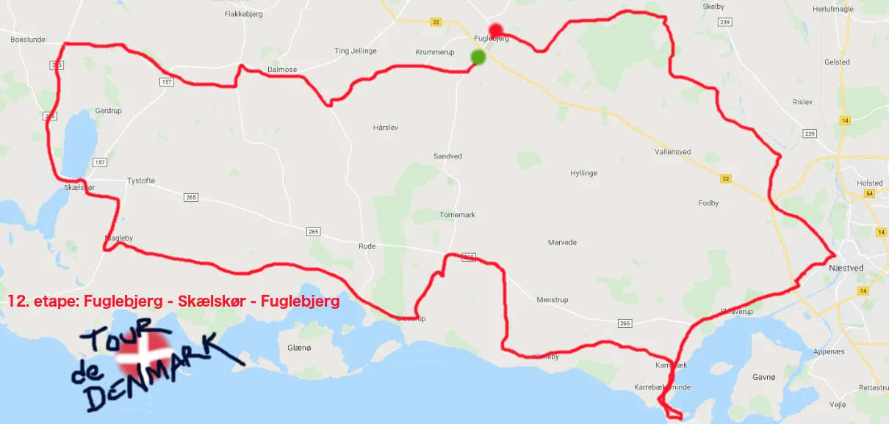
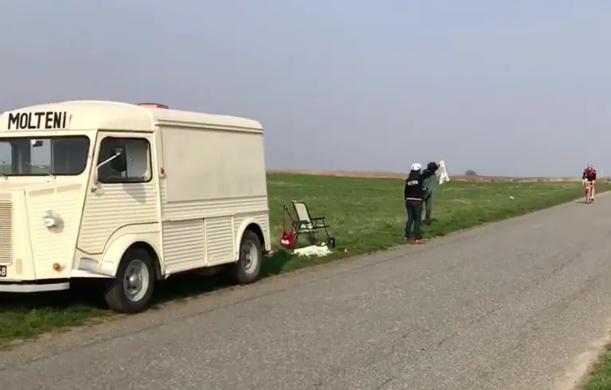

12. etape: Fuglebjerg-Skælskør-Enø-Fuglebjerg – og doping kaos

Så kom balladen!
Foranlediget af en kombination af Vagn betjents fotos af to Molteni ryttere i overmenneskelig hastighed på 8. etape og et anonymt tip til Anti-doping Danmark, der angiveligt kan spores tilbage til en telefonboks umiddelbart udenfor Team Peugeot Re-Cycled’s teamkælder, troppede to UCI-dopingkontrollanter, den lokale landbetjent og en bladsmører op før starten på 12. etape.


Dopingkaos, søforklaringer og ferietabeletter
Stålsat blev hele Moltenis HY-holdbus endevendt og resultatet var som forventet; Adskillige kasser tomme og fulde flasker med Kwaremont, mørk Leffe og Ripasso, et køleskab med blod, en spand høj-oktan varmecreme, 32 kg hårdtristede kaffebønner, 8 glas koffeintabletter og en plastikpose med tre glas “ferietabletter”. Posen lå gemt bag en hjulkapsel. Det var tydeligt, at dette ville kræve en god forklaring.
Inden Grane Maaløe i egenskab af logistik- og HY-ansvarlig kunne ytre sig, adresserede den ledende UCI-agent dog fundet til sladderpressen:
Altså… i og for sig var tippet vi fik korrekt. Der er tydeligvis tale om adskillige forhold.
1) Levnedsmiddelstyrelsen vil ikke bifalde vor underretning om opbevaring af medikamenter m.v. i et smådefekt køleskab, der ikke køler under 9 grader.
2) Toldmyndighederne underrettes ligeledes om manglende bandaroler på Ripassoen og den farvede benzin i tanken.
3) Og hvad angår anmeldelsen fra en M. Mejsen mod Squadra Molteni omhandlende snyd i kortspil og følgende uretmæssig erhvervelse af indsatsen i form af “ferietabeletter” til eget brug, må vi konstatere, at scenariet er overvejende sandsynligt, men at en god hånd i sig selv ikke er strafbar.
Forholdet frafaldes derfor.
Sluttelig må vi konstatere, at de øvrige fund ikke strider mod gængs praksis i retromiljøet. Der ikke fundet alvorlige forhold, hverken lycra, elmotorer, dunke på mere end 500 ml, kompressionstrømper, Autosol og pudseklude eller carbon-stumper. Så havde vi sgu lukket løbet på stedet!
Med et Ulrik Wilbek-agtigt Peugeot raseri-anfald larmende i baggrunden, kunne Grane herefter tilvejebringe et par ekstra detaljer om forløbet.
Ja – efter Mortens sejr i går på Col de Højen var han helt ustyrlig. Nu skulle der fransk papvin og spillekort på bordet. Vel egentlig ikke underligt efter alle de ferietabeletter han havde indtaget. Hvilket så også var grunden til, at der kun tre glas tilbage. Anyway – Molteni er ikke gode til billig fransk vin, men kortspil – dét styrer løjtnanten sgu’. Der gik ikke 15 minutter, så gik Peugeot Mousel-bet og vi kunne langt om længe få noget søvn.
Dagens etape – payback og den ultivative mazarinnøddebombe
Med 1½ times forsinkelse kunne etapen herefter igangsættes. Den overvejende flade rute på 103 km vestpå fra Fuglebjerg over Dalmose til Skælskør og derefter østpå ad Østersøruten forbi badestrandene ved Bisserup, Klinteby og Karrebæksminde, forløb for størstedelens vedkommende uden den store dramatik, da et fortørnet Molteni-mandskab lukkede ned for alle tiltag til uroligheder. Undervejs på ruten, havde sportsdirektør Klaus M Kjærsgaard, dog lagt en storslået ”payback”-plan.
Jeg sendte vores kageekspert, Torta Mama Maria i forvejen til forplejningszonen ved Enø bageri efter 80 km. Hun spottede i montren straks den ultivative mazarinnøddebombe, som dernæst røg i alle vores slynger.


Effekten af mazarinen udløstes som beregnet 8 minutter og 40 sekunder efter indtagelse og resulterede i et absurd tempo de sidste 15 km mod Fuglebjerg, der efterlod feltet sprængt i atomer i en orange paddehattesky af uldfibre.
Qua det indgående lokalkendskab, blev det Kristian Blume, det krydsede målstregen først. Med Molteni ryttere med mazarinfedtede fingre på de følgende 8 pladser…
I morgen er det hviledag og Squadra Molteni har igen kontrol over Tour de Denmark.
Forza Molteni!
Forza Enø Bageri!
SIDSTE NYT:
Her 2 minutter før deadline, er redaktionen kokmet i besiddelse af dokumenter fra UCI Comité Technique, der indikerer, at UCI’s tekniske komite er ved at lægge sidste hånd på et diskvalifikationanklageskrift mod Morten Mejsen (Peugeot ReCycled), da han på 11. etape var iført lange overtræksben af lycra. Desuden var hans cykel udstyret med nymodens klikpedaler og håndbremseklikgearskiftere.
Vi følger naturligvis op på denne alvorlige sag.
12. etape: Fuglebjerg-Skælskør-Fuglebjerg
1. Kristian Blume, Squadra Molteni
Klassement:
1. Kristian Blume, Squadra Molteni
2. Morten Mejsen, Peugeot Re-Cycled
3. Niels Bjørnsteen, Squadra Molteni
4. Jeppe Thiemer, Squadra Molteni
5. Jens Langergaard, Squadra Molteni
6. Grane Wunderbein Maaløe, Squadra Molteni
7. Jens Stærk Bojesen, Squadra Molteni
8. Lars Munch Larsen, Squadra Molteni
9. Per Sandahl, Squadra Molteni
10. Svend Seegert, Squadra Molteni
Hviledags-klassement:
1. Pelle Clemmesen, Peugeot Re-Cycled
Hold:
1. Squadra Molteni
2. Peugeot Re-Cycled